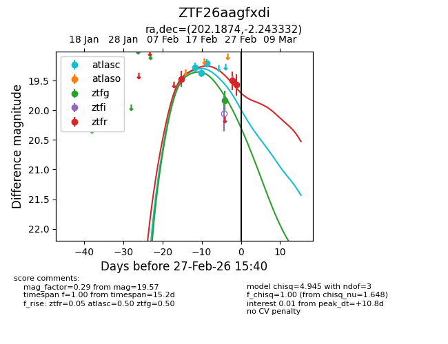
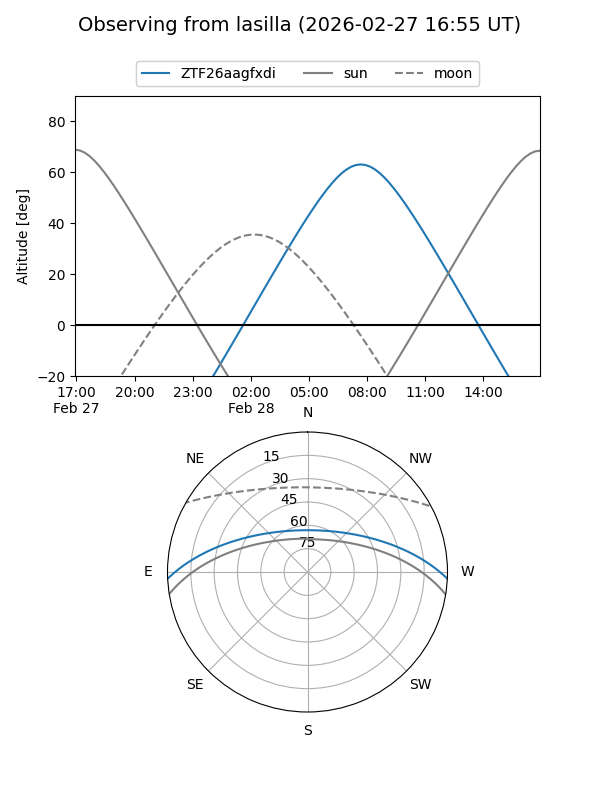
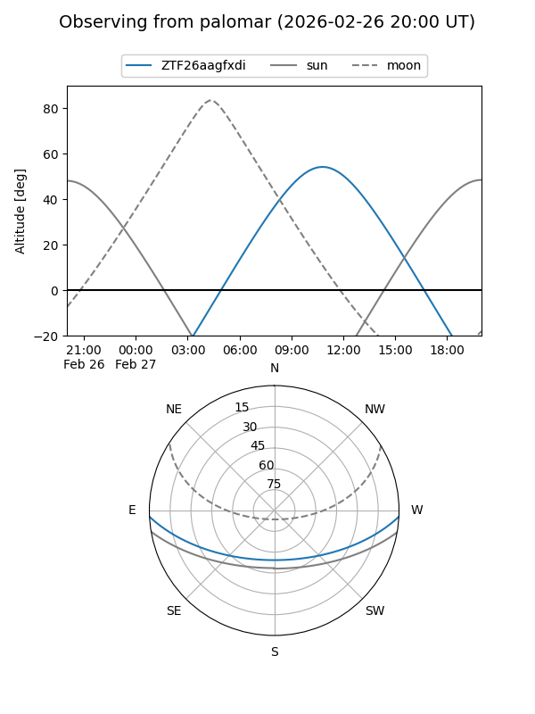
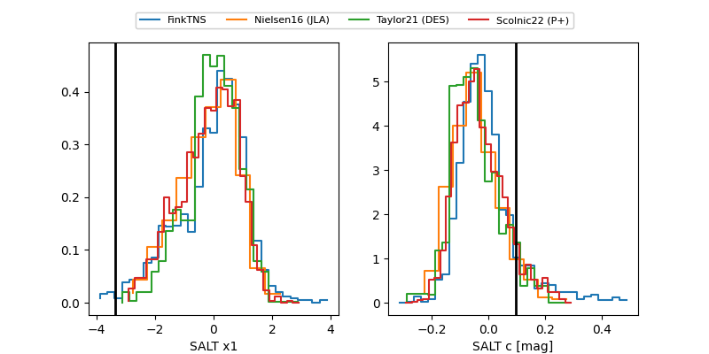

ZTF26aagfxdi
Target ZTF26aagfxdi at 2026-02-27 15:43
Aliases and brokers:
FINK: link
Lasair: link
ALeRCE: link
alt names
ZTF26aagfxdi (ztf,fink_ztf)
Coordinates:
equatorial (ra, dec) = 202.1874,-2.24333
equatorial (HMS+DMS) = 13:28:44.98,-02:14:36.00
galactic (l, b) = (321.4178,+59.28265)
Flags:
Photometry:
last atlasc=19.21, ztfg=19.84, ztfr=19.57
3 atlasc, 1 ztfg, 3 ztfr detections
Lightcurve

Visibility


Additional plots
